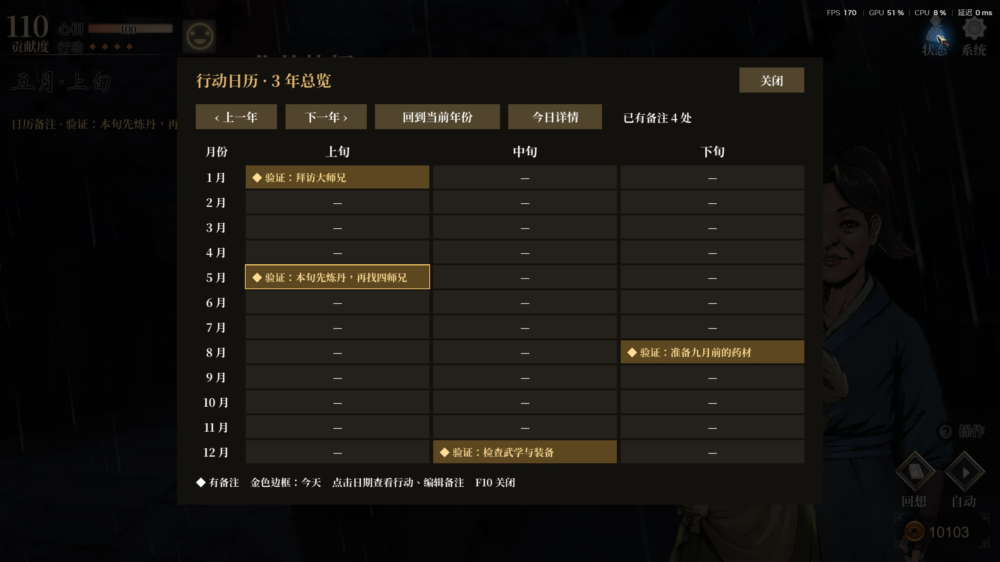
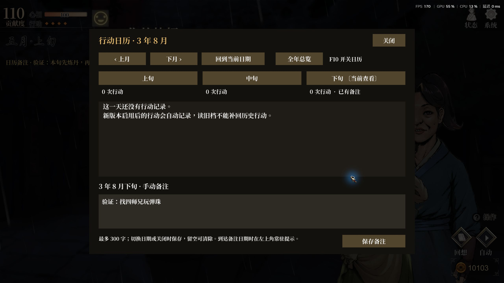
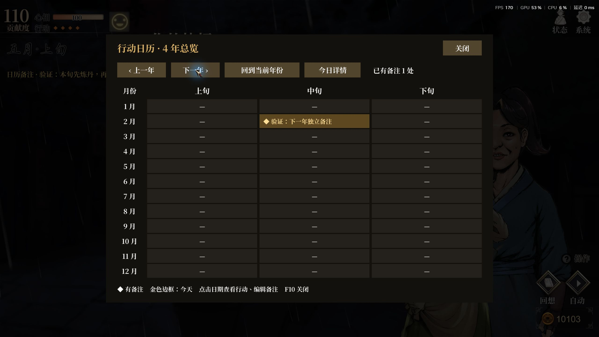
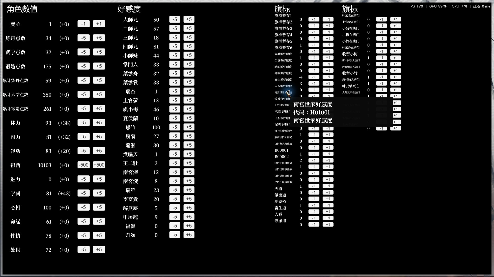
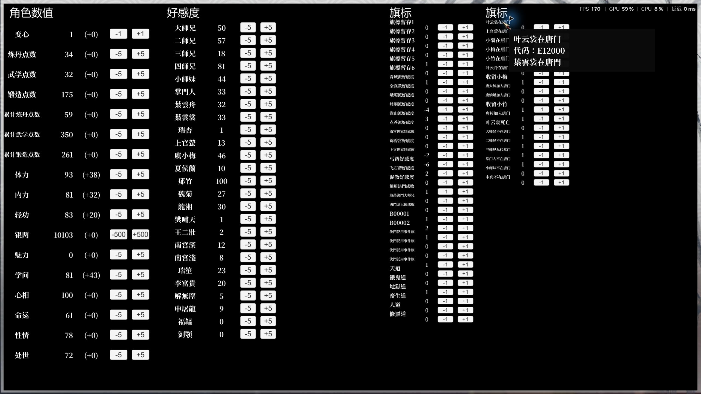
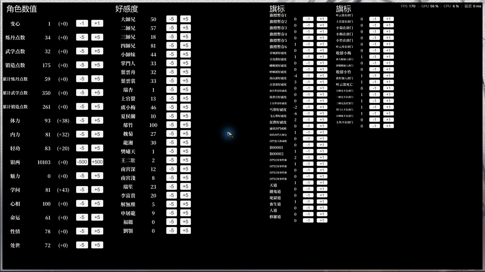

2026-10-16 · 游戏 release_1.0.6000.2 · Unity 2020.3.49f1 · BepInEx 6 Mono x64 · ScriptTrainer 1.1.2 · 2560 × 1440。下列图片为游戏窗口原始截图。截图中的备注为验证数据，验证结束后已清除。
| 检查项 | 结果与证据 |
|---|---|
| 全年日期表格 | F10 默认打开全年总览，12 个月 × 上中下旬全部可见；备注格高亮、显示摘要，今天有金色边框。 |
| 总览与详情互通 | 点击三年八月下旬进入对应详情；编辑备注后点击“全年总览”，摘要即时更新，JSON 中同日期内容同步保存。 |
| 年份与持久化 | 三年有 4 处备注、四年有 1 处独立备注。重启游戏、重新读档后，修改后的八月备注仍保留。 |
| F9 标题对齐 | 四栏标题统一字体、字号、缩放和基线；保留原生加减按钮、51 项旗标。 |
| 旗标悬浮代码 | 第一列“南宫世家好感度”显示 H01001；第二列“叶云裳在唐门”显示 E12000。提示使用独立背景、保持在菜单范围内，移出后隐藏。 |
| 重复开关 F9 | 修复 ScriptTrainer 重新激活菜单直接子物体导致的旧提示残留；有提示时关闭菜单、移开鼠标再打开，无旧提示。 |
| 回归检查 | 12 组、360 项断言通过，包含 1,000 次团战奖励采样。411 个原生成员引用、121 个 Harmony 目标、33 个反射成员全部解析通过。 |
| 安装与恢复 | 构建、发布目录、游戏目录、ZIP 内插件共 4 份哈希一致；原有 122 个存档文件逐个恢复，122 个哈希一致，清除验证备注及新生成的日历测试文件。 |






本次为 0.22.1 增量验证。读档环境音、事件过滤与固定选择、弹珠跳过、团战奖励、行动记录及滚轮回想的完整实测与限制见 0.22.0 实测记录。
已安装插件 SHA256：987CE51A6EFA9E6014F30B5273D6AF1E26976044662C3A0648C8FEBB532BF8AE。插件和游戏的原始运行日志保留在本地。